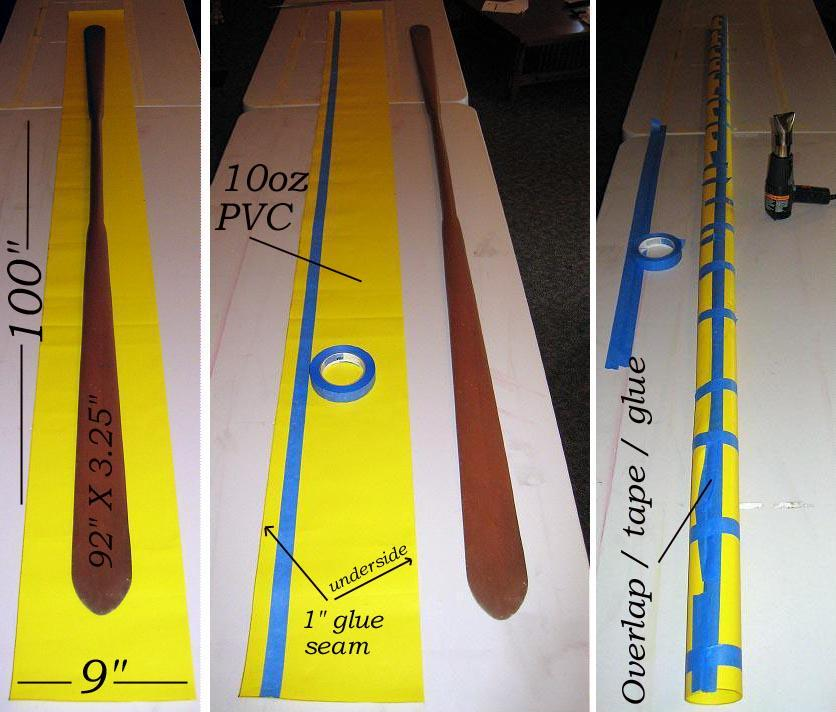

| PVC Paddle Bags ( page 1 of 5) | Menu Previous Page Next Page |
|

Mark out a rectangle of PVC 8" longer than the paddle. This will allow 4" on each end for the closure flap. The paddle pictured is 92" X 3.25" so the bag length is 100" ( 92" + 8"). The width of the cut out section is 9". This makes a 4" wide bag with 1" for the overlapping glue seam. This size also permits using the bag for a take-apart paddle. Using masking tape, mark out a 1" overlap for gluing on one side of the skin. Mark another 1" overlap section along the opposite side / opposite edge . Prep both glue seams with MEK and allow to dry. Apply 1 coat of HH-66 vinyl cement to both glue seams and allow to dry. Overlap the glue seams and tape in place. Apply heat and light pressure to initially bond the overlap. Apply heat and greater pressure to finalize the glue seam. A roll of tape can be used to apply the final pressure to the heated seam. Remove all tape from the paddle bag.
|
|